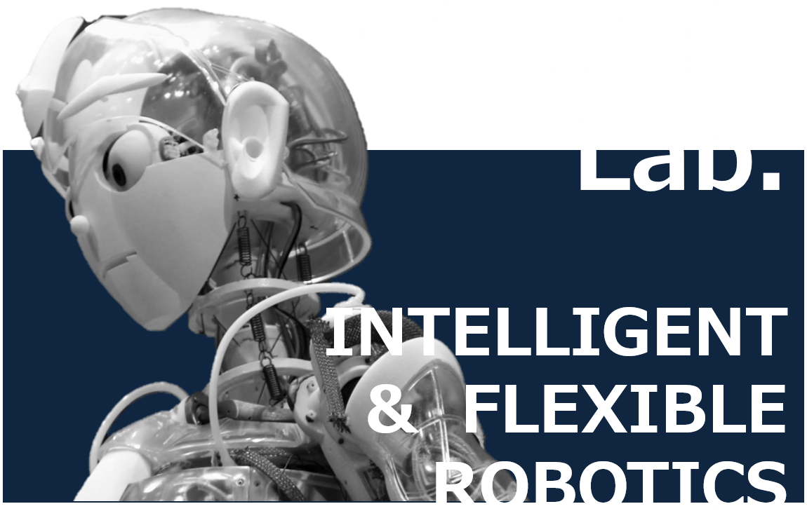

Talk to Kotaro!
and help making robots speak better
Language/Idioma/言語
English
日本語
Português
Español
About Talk to Kotaro
Experiment
Welcome to Mizuuchi Lab's Human-robot interaction experiment Talk to Kotaro! If you want to learn more about the experiment, click on the About Talk to Kotaro button. If you want to proceed to the experiment itself, click on the Experiment button. WARNING: Currently does not work on Firefox and Safari web browsers.